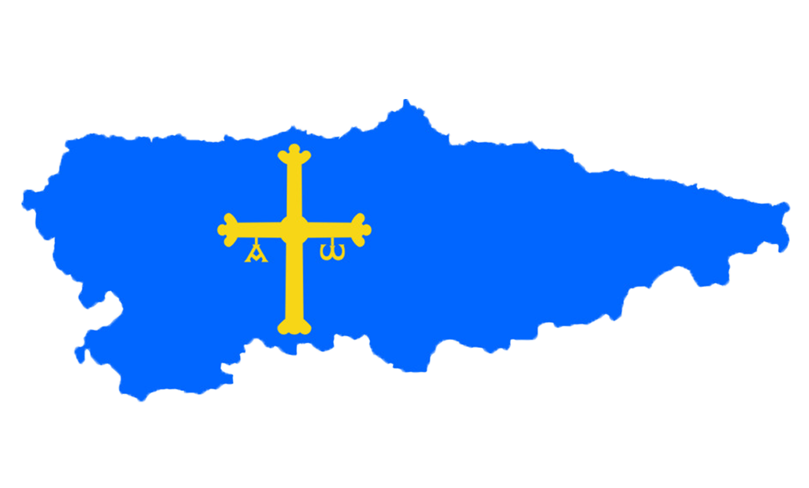

VIAJAMOS POR ASTURIAS
Esta situación de aprendizaje está dirigida al alumnado de Educación Infantil de 3, 4 y 5 años de un CRA situado al Occidente de Asturias y tiene como finalidad acercarles al conocimiento del entorno a través de un viaje por Asturias, fomentando la curiosidad, la experimentación y el aprendizaje significativo.
Se trabaja de forma globalizada las 3 áreas en las que se divide el currículo: Crecimiento en armonía, Descubrimiento y exploración del entorno y Comunicación y representación de la realidad, promoviendo el desarrollo integral del alumnado.
Para ello, se realizan distintos tipos de agrupamientos siguiendo los principios del Diseño Universal para el Aprendizaje (DUA): gran grupo (asamblea), pequeños grupos heterogéneos para actividades cooperativas y momentos de trabajo individual. Los espacios se adaptan a las actividades propuestas, utilizando tanto el aula como otros espacios del centro y salidas al entorno cercano.
Dicha situación se desarrolla a lo largo de 12 sesiones durante el mes de abril del curso 2025-2026, con una duración aproximada de 45-60 minutos por sesión. Está formado por 2 tareas, compuesta a su vez por distintas actividades que engloban distintos ámbitos como lectoescritura, expresión corporal, etc.
En cuanto a los productos, se desarrollará una infografía sobre Taramundi que es elaborada por la docente con la aplicación CANVA (debido a la corta edad del alumnado) y un vídeo (elaborado con la aplicación Video Maker) en el que se recogen imágenes de las distintas actividades, siendo el producto final. Otros recursos que se utilizan son vídeos de YouTube, aplicación Google Maps, actividades de ExeLearning, etc.
